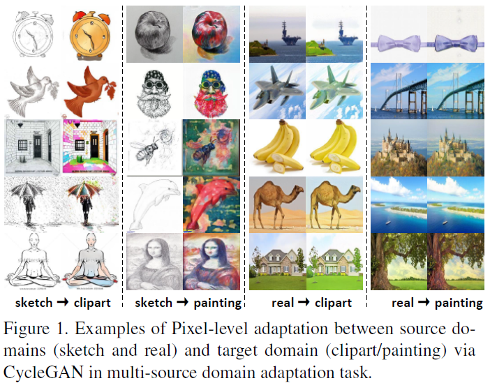
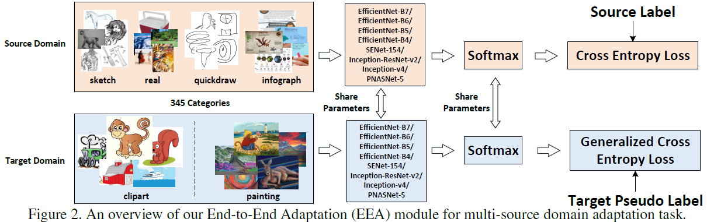
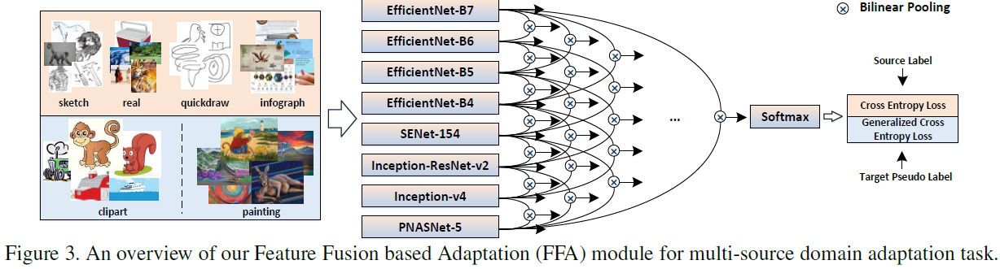
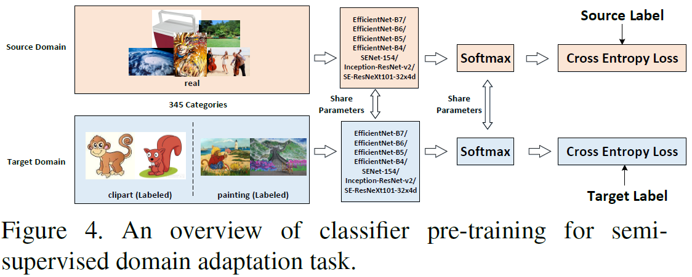
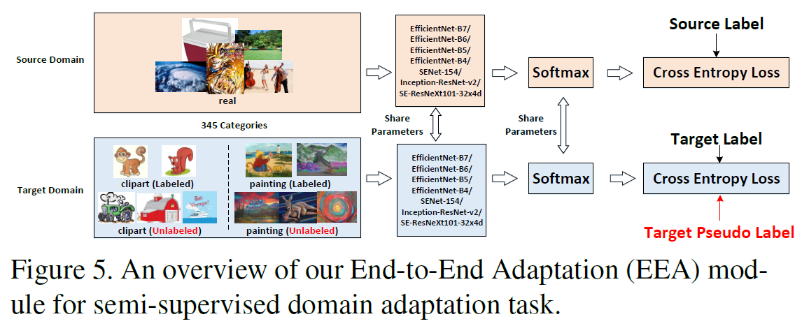
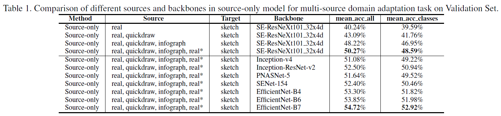
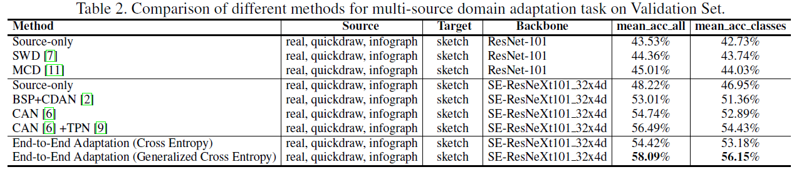
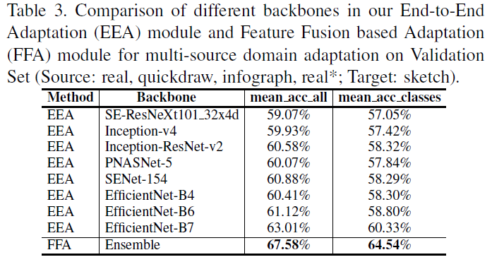
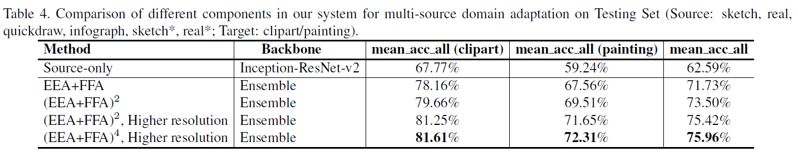
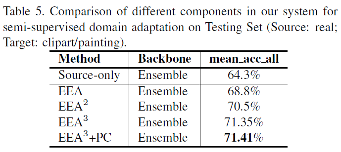

原文： http://csr.bu.edu/ftp/visda/2019/tech_reports/multi-source-1st.pdf
比赛详细介绍： https://github.com/VisionLearningGroup/visda-2019-public
multi-source数据集共6个域：
- Clipart (clp), a collection of clipart images;
- Infograph (inf), infographic images with specific object;
- Painting (pnt), artistic depictions of object in the form of paintings;
- Quickdraw (qdr), drawings from the worldwide players of game “Quick Draw!”;
- Real (rel), photos and real world images;
- Sketch (skt), sketches of specific objects.
Multi-Source任务要求：
要在下面两个不同的设置下，分别训练两个有相同方法（超参数）的模型：
模型1：在有标签的 sketch_train/real_train/quickdraw_train/infograph_train和没有标签的clipart_train上训练，在没有标签的clipart_test测试。
模型2：在有标签的 sketch_train/real_train/quickdraw_train/infograph_train和没有标签的 painting_train上训练，在没有标签的painting_test测试。
最终的比赛排名根据两个模型的正确预测数目的和来确定。（后文又说，取每一个类别的分类accuracy，然后取平均）但是有两个排行榜，一个是adapted models的，即同时利用source和target数据的，用来确定比赛最后排名；另外一个是source-only models的，即没有用adaptation思想，只是在source上训练的模型，直接用来在target做预测，这个结果可以用来估计提出的adaptation模型相对它的source-only模型有多大提升。
半监督domain adaptation任务要求：
source有标签，target有部分标签。可以通过伪标签方式给没有标签的target样本以标签。
注意这个competition track不是multi-source问题！只有一个source！
validation
Source Domain: Real
Target Domain: Sketch
test：针对不同的target数据，需要训练两个不同的模型，分别给出两个target上的预测结果，注意除了对应source和target数据集，不允许使用其他数据集。
Source Domain: Real
Target Domains: Clipart或Painting
Abstract
本文同时参加了VisDA-2019的multi-source domain adaptation和semi-supervised domain adaptation 两个板块的比赛。
Multi-source domain adaptation：
- 我们探究了pixel-level的多源域适配问题，也探究了feature-level的adaptation问题。也就是说，通过CycleGAN网络直接幻想我们有（生成）一些有标签的target样本，并通过自学习学习域不变的特征表示。
- fuse features from different backbones即将不同source的特征融合。
- code：https://github.com/Panda-Peter/visda2019-multisource
Semi-supervised domain adaptation ：
（半监督即target有部分标签）
- 采用标准的self-learning结构，基于有标签的source和target数据构建分类器，然后生成没有标签的target数据的伪标签。
- 然后这些伪标签target数据再用于重新训练分类器。
- 进一步，prototype-based classification module
- code：https://github.com/Panda-Peter/visda2019-semisupervised
1. Introduction
unsupervised domain adaptation (UDA)
利用source标签数据和大量target未标签数据生成target模型。即target完全没有标签。
multi-source domain adaptation[10]
文章[10]提出多源DA问题，即从multi-source到单个无标签target，也是unsupervised的。但是本文是semi-supervised，即target有部分标签。
2. Multi-Source Domain Adaptation
2.1 main idea
我们的灵感来自文章18，它的核心工作是在没有成对样本输入的条件下，完成imgage-to-image translation即将一种类型的图像翻译生成另一种类型的图像。我们使用文章18提出的CycleGAN网络进行unsupervised（无监督：target没有标签） pixel-level的adaptation：通过CycleGAN的generator，将source域（sketch或real）中的每张未标签的训练图片，翻译成target域（clipart或painting）的对应的图像（称为sketch星，real星域，它们就相当于比赛模型要求中所说的，clipart和painting域的未标签的数据？？？？？？？）。如图1所示就是从source域（sketch和real）经过pixel-level的适配到target域（clipart和painting）的示例图像。
source domains : sketch/real
target domain: clipart/painting

下一步，将全部6个source域（包含sketch, real, quickdraw, infograph, sketch星, and real星）combine起来（也就是混合成一个source），针对这个大的source域（不考虑无标签的train数据集？？？？？？？？）训练8个不同的source-only的backbone。
然后，对8个backbone在target上进行预测，取平均，得到每个没有标签的target样本的初始伪标签（initial pseudo label）。
进一步，我们的方法是一种混合两个adaptation模型的混合系统，来对这些初始化过后的伪标签作进一步的优化。
我们交替使用两种适应模型，四次，以增强伪标签。
两种adaptation模型分别如下：
2.2 End-to-End Adaptation Module (EEA)

EEA使用8个source-only训练出来的backbone模型进一步fine-tune。source和target共享参数，前面得到target的初始伪标签，与这里通过每个backbone网络得到的预测结果计算generalized cross entropy loss【17】。训练后，更新没有标签的target样本的伪标签。
2.3 Feature Fusion based Adaptation Module (FFA)

FFA通过Bilinear pooling融合每两个backbone的特征。然后，对每个input source/target样本的每个融合的特征，都从头训练分类器。每个分类器有有标签source样本的cross entropy loss，和无标签target样本的generalized cross entropy loss。
训练出来一共有7+6+5+4+3+2+1=28个融合特征的分类器，和8个对应每个backbone单特征的分类器。取36个分类器的平均值，更新没有标签的target样本的伪标签。
在推理（inference）阶段，取最后一次的FFA模型的36个分类器的平均输出作为最后预测结果。
3. Semi-Supervised Domain Adaptation
这是比赛的第二个任务。
半监督学习中，我们将有标签的target样本上采样10倍，和source样本一起用supervised方式训练一个分类器。图4是分类器预训练的细节。（可以看到由于半监督中，target域是有标签的）

我们训练7个不同的backbone分类器，取平均获得每个无标签target样本的初始伪标签。（注意，这个track只有一个source域）
3.1 End-to-End Adaptation Module (EEA)
我们的半监督条件下的EEA模型如图5所示。

然后，将获得了初始伪标签的target样本，和本来带有标签的target样本，和source一起，丢进EEA训练。
训练后，取7个分类器预测结果的平均，更新伪标签。
更新后的伪标签，用于再次训练这个EEA网络模型。
3.2 Prototype-based Classification Module (PC)
motivation来自【9】。
我们构建了另外一个非参数化的分类器，来增强通过之前的EEA模型得到的预测结果。
具体来说，在每个backbone下，都定义每一类的有标签target样本的均值为该类的prototype（根据给定的标签和我们获得的伪标签）。这样，基于prototype的分类就相当于去衡量每个样本相对于这个prototype的距离。
在推理阶段，我们取：
1）7个分类器最后一次的输出
2）7个prototype 分类器的输出
的平均值，作为最后预测结果。
4. Experiments
4.1 Multi-Source Domain Adaptation
4.1.1 Effect of pixel-level adaptation in source-only model

- 逐步增加source数量，accuracy是可以增加的，证明了从多个sorce学习有利于迁移。
- 另外，在EfficientNet-B7这个backbone上观测到的效果最好。
4.1.2 Effect of End-to-End Adaptation (EEA)

- EEA with Generalized Cross Entropy效果最好
- 和traditional Cross Entropy比较，说明了它的有效性。
4.1.3 Effect of Feature Fusion based Adaptation (FFA)

by fusing the features from every two backbones in EEA via Bilinear Pooling, our FFA leads to a large performance improvement.
4.1.4 Performance on Testing Set

we also try to enlarge the input resolution of each backbone (+ 64 pixels in both width and hight) in the submitted systems and such processing is named as “Higher resolution.”
4.2 Semi-Supervised Domain Adaptation

Reference
【1】Pan Y, Li Y, Cai Q, et al. Multi-Source Domain Adaptation and Semi-Supervised Domain Adaptation with Focus on Visual Domain Adaptation Challenge 2019[J]. arXiv preprint arXiv:1910.03548, 2019.
【10】Xingchao Peng, Qinxun Bai, Xide Xia, Zijun Huang, Kate Saenko, and Bo Wang. Moment matching for multi-source domain adaptation. arXiv preprint arXiv:1812.01754, 2018.